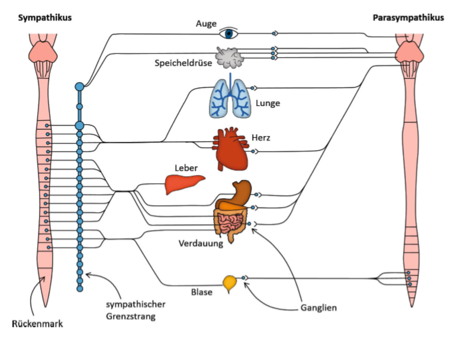
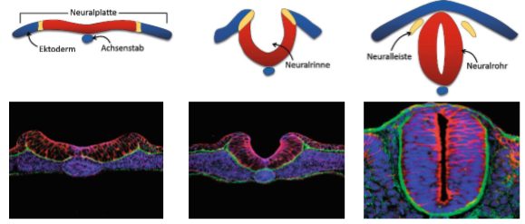

2. Anatomie des Gehirn
1. Gliederung des Nervensystems
1.1 Anatomisch
Das Nervensystem gliedert sich anatomisch betrachtet in zwei Hauptbereiche. Zum einen das Zentrale Nervensystem (ZNS), welches sich aus Gehirn und Rückenmark zusammensetzt, die über den Hirnstamm miteinander verbunden sind. Das ZNS koordiniert Denk- und Handlungsprozesse. Zum Schutz schirmen Wirbelsäule und Schädel es nach außen ab. Der Liquor dient als zusätzliches Flüssigkeitskissen. Der zweite Bereich wird durch das periphere Nervensystem dargestellt. Es besteht aus vom Rückenmark ausgehenden Nervenfasern, die entweder Sinnesinformationen aufnehmen und über sensorische Fasern ans ZNS weiterleiten (afferent) oder Bewegungsimpulse vom ZNS über motorische Fasern ins Zielorgan leiten (efferent).

1.2 Nach Funktion
1.2.1 somatisches Nervensystem
Befasst sich mit dem bewussten Erleben und Steuern → steuert Skelettmuskeln zur willentlichen Bewegung an oder bewusste Empfindungen wie Hitze und daraus resultierender Schmerz
1.2.2 vegetatives bzw. autonomes Nervensystem
Befasst sich mit der unwillkürlichen und unbewussten Steuerung wie beispielsweise die Steuerung des Blutdruckes, der Verdauungsvorgänge, Homöostase und der Hormonfreisetzung. Unterteilen lässt sich das ganze in sympathische und parasympathische Steuerung. Während der Sympathikus aktivierend und energiemobilisierend agiert, reduziert der Parasympathikus die Körperaktivität und den Energieverbrauch des Körpers. Alle Nervenfasern des Sympathikus werden nach Verlassen des Rückenmarks direkt neu verschaltet (Sympathischer Grenzstrang), während die parasympathischen Nervenfasern direkt am Zielorgan mittels Ganglien neu verschaltet werden.

1.3 Enterisches Nervensystem
Nervensystem des Bauchs, welches nah am Magen- und Darmgewebe liegt.
Es besteht aus circa 100 Millionen Nervenzellen, was ungefähr der Nervenzellzahl des Rückenmarkes entspricht.
Dieses Nervensystem entzieht sich weitestgehend der Steuerung durch das periphere Nervensystem. Es ist über das Rückenmark direkt mit dem Gehirn verbunden und koordiniert aktiv den reibungslosen Ablauf der Verdauung, indem es die Darmbewegung,die Ausschüttung von Verdauungssäften, die Durchblutung und die Aktivität von Immunzellen im Darm steuert.
2. Gehirn
2.1 Aufbau
verlängertes Mark: Übergang des Gehirns ins Rückenmark. Hier werden wichtige Faserstränge gebündelt. Es besteht aus 100 verdichteten Nervenkernen, die ein kleines Netz bilden. Die Regulation von Schlaf, Aufmerksamkeit, Atmungs- und Kreislaufreflexen ist hier verortet.
Brücke: Sie liegt kopfseitig zum verlängerten Mark und bildet die Verbindung zwischen Groß- und Kleinhirn
Mittelhirn: Sie ist die Umschaltzentrale für akustische und optische Signale und teilweise verantwortlich für die Bewegungssteuerung
Verlängertes Mark, Brücke und Mittelhirn werden zusammen als Hirnstamm bezeichnet
Kleinhirn: Das extrem gefurchte und gefaltete Kleinhirn führt einen permanenten Abgleich von Bewegungsimpulsen mit der Lage der Gliedmaßen durch und kontrolliert so sämtliche Bewegungsabläufe. Es ist mit dem Großhirn und dem Rückenmark gekoppelt.
Zwischenhirn: Es besteht aus drei wichtigen Regionen
→ Thalamus: bewusste Verarbeitung von Sinnesinformationen
→ Hypothalamus: Steuerung unbewusster Körperfunktionen wie Blutdruck und Temperatur; regelt den Hormonhaushalt
→ Hypophyse: wird auch Hirnanhangsdrüse genannt; sie ist etwa erbsengroß und wird vom Hypothalamus gesteuert, um unser Hormonsystem zu regulieren, welches Vorgänge wie Wachstum/Fortpflanzung oder Stoffwechsel beeinflusst.
Großhirn: Es ist durch eine tiefe Furche in zwei Hälften, die Hemisphären getrennt. Ein dickes Nervenbündel verbindet diese. Die Rinde ist stark gefurcht und besteht aus Nervenzellkörpern mit nach innen geleiteten Fasern. Das Großhirn stellt den größten und evolutionär neuesten Hirnabschnitt dar. Hier wird Sprache oder Bewegungen ebenso wie Sinneseindrücke und Gefühle sowie Gedanken verarbeitet.
Liquor: Hirnflüssigkeit, die ein Flüssigkeitspolster bildet und über 4 Hirnventrile ins Innere gelangen
Doch erst die Gesamtheit dieser Bestandteile ermöglicht es dem Hirn seine Funktion erwartungsgemäß zu erfüllen.
2.2 Hirnnerven
Mehr als 99 Prozent der Nervenfasern des Gehirns bleiben im Innern des Gehirns, nur sehr wenige Nervenzellen treten in direkten Kontakt mit der Außenwelt und bilden so wenige, aber äußerst effektive Nervenleitungen nach außen aus. Neben dem Rückenmark verlassen nur noch 12 paarweise unterhalb des Gehirns das Gehirn, die sogenannten Hirnnerven. Diese steuern dabei hauptsächlich Bewegungen oder vermitteln Sinnesempfindungen unseres Kopfes.
2.3 Das Rückenmark
Das Rückenmark ist die zentrale Datenleitung des Körpers. Es ist nicht einmal so dick wie ein kleiner Finger, dafür aber deutlich länger: es entspringt dem Hirnstamm und zieht sich etwa 45 cm entlang der Wirbelsäule bis zum zweiten Lendenwirbel. Über das Rückenmark stellt das Gehirn den Kontakt mit dem peripheren Nervensystem und somit zu den Organen her. Es ist somit in der Lage Sinnesreize zu empfangen und Muskeln Bewegungsimpluse zu vermitteln. Dabei besteht das Rückenmark sowohl aus Nervenfasern ( auch weiße Substanz genannt), als auch aus Nervenzellkörpern im inneren Bereich des Rückenmarks (graue Substanz),welche neue Nervenfasern ausbilden. So entsteht die typische„ Schmetterlingsstruktur“ des Rückenmarks, die im Querschnitt gut erkennbar sind: Innen sitzen die Nervenzellkörper, außen liegen die Nervenfasern, die bis zum Gehirn verlaufen. Die Nervenleitungen des menschlichen Körpers sind zwar ziemlich schnell, trotzdem kann es einige Zehntelsekunden dauern, bis ein Sinnesreiz im Gehirn verarbeitet und umgesetzt wird. In Notfallsituationen, wie beim Stolpern an einer Treppenstufe, ist dies zu lange. Deswegen kann das Rückenmark schnelle Bewegungen selbstständig ohne Gehirns verarbeiten: Es erzeugt Reflexe. Neben dem zentralen Rückenmarksstrang arbeite daran zahlreiche Nervenknoten, sogenannte Ganglien. Dort sitzen Nervenzellen, die mit ihren Ausläufern permanent den Dehnungszustand von Muskelfasern messen. Diese Information werden an Nervenzellen im Rückenmark geleitet, die wiederum die Muskelfasern ansteuern. Dies stellt einen viel kürzeren Weg dar, ein Reflexbogen: Eine plötzliche Dehnungsänderung des Muskels wird von den Neuronen im Ganglion registriert und vor Ort im Rückenmark verarbeitet. Daraufhin spannt sich der Muskel an.
Embryonale Entwicklung des Gehirns
Der Start der embryonalen Entwicklung des Gehirns wird auf den 17. Tag nach der Befruchtung datiert. Als erster Schritt kommt es zur „Neuralinduktion“ bei der sich die Neutralplatte definiert. Diese setzt sich aus verschiedenen Gewebeteilen zusammen, von denen das Ektoderm also die „äußere Haut“ am bedeutendsten ist, da es für die Bildung von Nervenzellen vorgesehen ist. Darauf folgt im 2. Schritt bereits einen Tag später die „Neurulation“, also die Einschnürung der Neuralplatte. Der vollständig eingeschnürte Bereich wird Neuralrohr genannt und setzt sich aus seinem vorderen Teil, welcher später das Gehirn wird, und seinem hinteren Teil, welcher das Rückenmark bilden wird, zusammen. Der Hohlraum bildet das Ventrikelsystem des Gehirns und enthält die Hirnflüssigkeit.
Die Neuralleiste besteht aus zwei Gewebesträngen, die später den Hauptteil des peripheren Nervensystems bilden werden. Nachdem sich am 27. Entwicklungstag beide Neuralrohr-Enden verschlossen haben, beginnt die Bläschenbildung und damit Schritt 3. Der Ursprung aller Gehirn-Areale liegt nämlich in den sogenannten drei primären Gehirnbläschen. Aus ihnen entstehen nach dem 32. Embryonaltag die fünf sekundären Hirnbläschen, die als Vorläufer für die Hirnregionen gesehen werden können. Neue Zellen des Nervensystems bilden sich aus den Stammzellen, der an der Innenwand des Neuralrohrs verankert liegen. Sie können bis zu 20.000 neue Nervenzellen pro Minute produzieren, die dann an die Außenseite des Gehirns wandern. Dabei helfen ihnen spezielle Ausläufer, die Wachstumskegel. Sie reagieren spezifisch und hoch empfindlich auf bestimmte Signalstoffe im Gewebe, die neue Zellen anziehen oder abstoßen.

Neocortex
Der Neocortex auch als Hirnrinde bezeichnet ist der Teil des Gehirns, der das Gehirn höher entwickelten Säugetiere ausmachen. Er ist für alle intellektuellen, kulturellen Fähigkeiten wie Sprache oder Gedächtnis verantwortlich. Genauer unterteilt ist der Neocortex in graue und weiße Substanz. In dem eng zusammenliegenden (daher auch die dunkle Farbe) zwei bis vier Millimeter dicken Rindenbereich werden Nerven gebündelt und ermöglichen die Verbindung ins Innere des Gehirns mittels Nervenfasern. Sie ist in sechs verschiedene Schichten unterteilt, in denen sich die Zellen auf eine charakteristische Art und Weise anordnen. Hier im Bild wird eine Art der Nervenzellen, die Pyramidenzellen gezeigt. Dies hat einen großen Vorteil: Die Nervenzellen der entsprechenden Schichten wissen genau, wo die Information herkommt, es entsteht ein Informationsfluss, in dem nichts durcheinandergerät. Dieser Aufbau ermöglicht die Nutzung der Nervenzellen als kleine Rechenmaschinen innerhalb der jeweiligen Schicht; 90% der Nervenzellen treten somit gar nicht erst in Kontakt mit der Außenwelt.
Die weiße Substanz besteht aus Nervenbündel, welche von einer fettigen Hüll- bzw. Isolierungszelle umgeben sind, die die weiße Farbe ausmachen.
Limbisches System
Das limbische ist der Teil des Großhirns, der sich im Inneren dessen befindet. Der Name kommt ursprünglich vom lateinischen limbus, was übersetzt so viel wie „Saum“ heißt. Benannt wurde er ursprünglich so, da er das Zwischenhirn umsäumt. Doch diese Einteilung ist nicht wirklich präzise, bis heute ist noch nicht endgültig klar, bis wo hin sich das limbische System erstreckt. Unbestreitbar dazu gehören Hippocampus, Gürtelwindung ( Gyrus cinguli ; liegt direkt über dem Balken), die Amygdala auch Mandelkern genannt und der Mamillarkörper. Seine Funktion liegt in der Verbindung von Groß- und Zwischenhirn und die Einbettung des Hippocampus und der so ermöglichte Aufbau von Erinnerungen und Gefühlen. Es agiert als Schaltzentrale, die alle Hirnbereiche miteinander verknüpft. Eine besondere Rolle für die Gefühlsausprägung kommt hierbei der Amygdala zu, einer kleinen Ansammlung von Neuronen. Allerdings handelt es sich bei den Gefühlen eher um unmittelbare und schnelle Gefühlsäußerungen statt wie bei Liebe oder Hass also längerfristige Gefühle. Zur Übermittlung der Sinneseindrücke wird die Verbindung zwischen Amygdala und Zwischenhirn bemüht. Die Amygdala setzt die Sinneseindrücke in Gefühlsbedeutungen um wie Ekel oder Freude. Gesichtsbewegungen, die diese Gefühle wiederspiegeln werden durch die Gürtelwindung ausgelöst. Mamillarkörper und Hippocampus vermitteln unbewusste Körperfunktionen und bilden so das Gedächtnis aus, was zeigt, wie wichtig Gefühle für das Speichern von Erinnerungen sind.
Der Hyppocampus
Zur dauerhaften Speicherung wird der Hyppocampus eingesetzt. Er zieht sich an den Außenseiten des limbischen Systems entlang und bildet Nervenfasern aus, welche später an der Ausführung des Gedächtnisses beteiligt sind. Wie beim Neocortex ist der Hyppocampus mehrschichtig aufgebaut, er besitzt allerdings nur drei Schichten. Er entscheidet was gelernt und vergessen wird. Der Hyppocampus präsentiert dazu dem Großhirn jede kurzzeitig gespeicherte Sinnesinformation und je nachdem wie oft, wird die Information irgendwann gespeichert und als dauerhafte Erinnerung verbleibt. Da er eine zentrale Funktion übernimmt, muss der Hyppocampus sehr gut mit den andern Hirnarealen verknüpft sein und baut dafür einen Faserkreis quer durch das limbische System auf, auch Papez-Kreis genannt. Bei einer Gehirnerschütterung kann es sein, dass genau dieser Kreis gestört ist und somit kurzzeitige Amnesie auftreten. Die Besonderheit des Hyppocampus ist, dass es auch im Erwachsenenalter noch Nerven aufgebaut werden.
Literatur:
[1] Faszinierendes Gehirn
Henning Beck · Sofia Anastasiadou Christopher Meyer zu Reckendorf
Eine bebilderte Reise in die Welt der Nervenzellen
[2] : https://flexikon.doccheck.com/de/Hypophyse Zugriff 03.05.2019 16:13 Uhr
[3] Bild Gehirn in Farbe https://de.dreamstime.com
stock-abbildung-brain-bright-idea-illustration-kritzeln-sie-vektorkonzept-über-menschliches-gehirn-und-ideen-kreative-illustration-image96184281 03.05.2019 16:33 Uhr
[4] Gehirn&Geist Basiswissen Nr. 2⁄2011; Neuronen & Co
[5] Spektrum der Wissenschaft März 2015; Wie funktioniert unser Gehirn?
[6] Gehirn und Geist Basiswissen Nr.1⁄2013; Methoden der Forschung Faszinierende Einblicke in Psyche und Gehirn